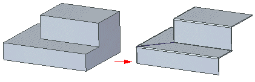

Thin Part to Sheet Metal command
Use the Thin Part to Sheet Metal command to transform a uniform thickness solid model to a sheet metal model.

In ordered, the command uses a reference face on the input body to identify and marks tabs and bends. In synchronous, it creates native tabs and flanges. The input face defines the thickness for the sheet metal model.
Once transformed, you can add sheet metal features to the body, such as jogs, dimples, and so forth. You can also edit the thickness, bend radius, or flatten the model, just as you can with any native sheet metal file.
You can use the command to rip edges in models that contain fused corners. If you try to transform a part that contains fused corners, upon transformation of the face selection, you must split an edge or curve. To complete the part transformation, click the Rip Step button on the command bar, and then click the edges or curves to split.

If needed, the command uses the bend radius specified on the Options dialog box to round the model edges. In some cases, such as a partial flange or interior flange that contains round corners and sharp corners, the command adds bend relief to the model so the model can be successfully converted to a sheet metal part.
If there are no sheet metal features in the file, the material thickness is computed from the selected solid model based on the material thickness setting on the Options dialog box. When the feature updates, the material thickness value updates based on the changes to the solid. If more than one transformed feature exists, the first feature in the tree structure sets the value.
As with the Save As Flat command, all features are transformed except planes, partial cylinders, and ruled surfaces. All other geometry is stored as deformation features. Unlike the Save as Flat command, features such as interior loops and spline faces are not removed from the model. The faces appear in the model as deformation feature faces.
How do I
Convert a part to sheet metalOverride the corner treatment
Override the bend values
Transform a document to a synchronous sheet metal part
Transform a sheet metal part
Rip a corner of a sheet metal part
Learn more
Converting part documents to sheet metalLook up more details
Part to Sheet Metal commandPart to Sheet Metal Options dialog box
Thin Part to Synchronous Sheet Metal command
Thin Part to Synchronous Sheet Metal command bar
Thin Part to Sheet Metal command bar
Thin Part to Sheet Metal Options dialog box
Rip Corner command
Rip Corner command bar